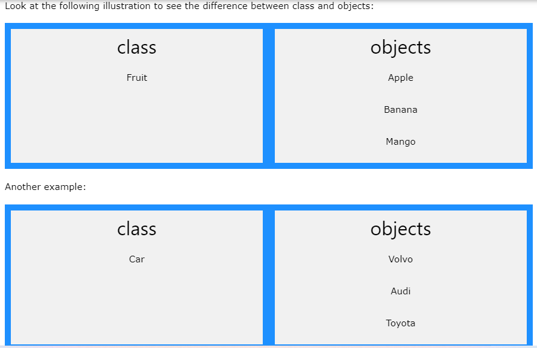

Study Java
Study Java
What is java?
Java is a popular programming language, created in 1995. It is owned by Oracle, and more than 3 billion devices run Java. It is used for:
- Mobile applications (specially Android apps)
- Desktop applications
- Web applications
- Web servers and application servers
- Games
- Database connection
- And much, much more!
Why use java?
- Java works on different platforms (Windows, Mac, Linux, Raspberry Pi, etc.)
- It is one of the most popular programming language in the world
- It is easy to learn and simple to use
- It is open-source and free
- It is secure, fast and powerful
- It has a huge community support (tens of millions of developers)
- Java is an object oriented language which gives a clear structure to programs and allows code to be reused, lowering development costs
- As Java is close to C++ and C#, it makes it easy for programmers to switch to Java or vice versa
Variables
Variables are containers for storing data values. In Java, there are different types of variables, for example:
- String - stores text, such as "Hello". String values are surrounded by double quotes
- int - stores integers (whole numbers), without decimals, such as 123 or -123
- float - stores floating point numbers, with decimals, such as 19.99 or -19.99
- char - stores single characters, such as 'a' or 'B'. Char values are surrounded by single quotes
- boolean - stores values with two states: true or false
Declaring variables
To create a variable, you must specify the type and assign it a value:
type variableName = value;
Where type is one of Java's types (such as int or String), and variableName is the name of the variable (such as x or name). The equal sign is used to assign values to the variable.
Final Variables
If you don't want others (or yourself) to overwrite existing values, use the final keyword (this will declare the variable as "final" or "constant", which means unchangeable and read-only):
int myNum; myNum = 15; System.out.println(myNum);
Print Variables
The println() method is often used to display variables. To combine both text and a variable, use the + character:
example: String name = "John"; System.out.println("Hello " + name);
You can also use the + character to add a variable to another variable:
example: String firstName = "John "; String lastName = "Doe"; String fullName = firstName + lastName; System.out.println(fullName);
For numeric values, the + character works as a mathematical operator (notice that we use int (integer) variables here):
int x = 5; int y = 6; System.out.println(x + y); // Print the value of x + y
Declare Multiple Variables
To declare more than one variable of the same type, you can use a comma-separated list:
Example Instead of writing: int x = 5; int y = 6; int z = 50; System.out.println(x + y + z);
int x = 5, y = 6, z = 50; System.out.println(x + y + z);
One Value to Multiple Variables
int x, y, z; x = y = z = 50; System.out.println(x + y + z);
Identifiers
All Java variables must be identified with unique names. These unique names are called identifiers. Identifiers can be short names (like x and y) or more descriptive names (age, sum, totalVolume). Note: It is recommended to use descriptive names in order to create understandable and maintainable code:
The general rules for naming variables are:
- Names can contain letters, digits, underscores, and dollar signs
- Names must begin with a letter
- Names should start with a lowercase letter and it cannot contain whitespace
- Names can also begin with $ and _ (but we will not use it in this tutorial)
- Names are case sensitive ("myVar" and "myvar" are different variables)
- Reserved words (like Java keywords, such as int or boolean) cannot be used as names
Data Types
- Primitive data types - includes byte, short, int, long, float, double, boolean and char
- Non-primitive data types - such as String, Arrays and Classes (you will learn more about these in a later chapter)
Primitive Data Types
A primitive data type specifies the size and type of variable values, and it has no additional methods. There are eight primitive data types in Java:
| Data Types | Size | Description |
|---|---|---|
| byte | 1 byte | Stores whole numbers from -128 to 127 |
| short | 2 bytes | Stores whole numbers from -32,768 to 32,767 |
| int | 4 bytes | Stores whole numbers from -2,147,483,648 to 2,147,483,647 |
| long | 8 bytes | Stores whole numbers from -9,223,372,036,854,775,808 to 9,223,372,036,854,775,807 |
| float | 4 bytes | Stores fractional numbers. Sufficient for storing 6 to 7 decimal digits |
| double | 8 bytes | Stores fractional numbers. Sufficient for storing 15 decimal digits |
| boolean | 1 bit | Stores true or false values |
| char | 2 bytes | Stores a single character/letter or ASCII values |
Numbers
Primitive number types are divided into two groups:
Integer types stores whole numbers, positive or negative (such as 123 or -456), without decimals. Valid types are byte, short, int and long. Which type you should use, depends on the numeric value.
Floating point types represents numbers with a fractional part, containing one or more decimals. There are two types: float and double.
Integer Types
Byte
The byte data type can store whole numbers from -128 to 127. This can be used instead of int or other integer types to save memory when you are certain that the value will be within -128 and 127:
Example byte myNum = 100; System.out.println(myNum);
Short
The short data type can store whole numbers from -32768 to 32767:
Example short myNum = 5000; System.out.println(myNum);
Int
The int data type can store whole numbers from -2147483648 to 2147483647. In general, and in our tutorial, the int data type is the preferred data type when we create variables with a numeric value.
Long
The long data type can store whole numbers from -9223372036854775808 to 9223372036854775807. This is used when int is not large enough to store the value. Note that you should end the value with an "L":
Floating Point Types
You should use a floating point type whenever you need a number with a decimal, such as 9.99 or 3.14515. The float and double data types can store fractional numbers. Note that you should end the value with an "f" for floats and "d" for doubles:
Java Boolean Data Types
Boolean Types
A boolean data type is declared with the boolean keyword and can only take the values true or fals
\Example boolean isJavaFun = true; boolean isFishTasty = false; System.out.println(isJavaFun); // Outputs true System.out.println(isFishTasty); // Outputs false
Java Characters
Characters
The char data type is used to store a single character. The character must be surrounded by single quotes, like 'A' or 'c':
Example char myGrade = 'B'; System.out.println(myGrade);
Alternatively, if you are familiar with ASCII values, you can use those to display certain characters:
Example char myVar1 = 65, myVar2 = 66, myVar3 = 67; System.out.println(myVar1); System.out.println(myVar2); System.out.println(myVar3);
Strings
The String data type is used to store a sequence of characters (text). String values must be surrounded by double quotes:
Example String greeting = "Hello World"; System.out.println(greeting);
Java Non-Primitive Data Types
Non-Primitive Data Types
Non-primitive data types are called reference types because they refer to objects.
The main difference between primitive and non-primitive data types are:
- Primitive types are predefined (already defined) in Java. Non-primitive types are created by the programmer and is not defined by Java (except for String).
- Non-primitive types can be used to call methods to perform certain operations, while primitive types cannot.
- A primitive type has always a value, while non-primitive types can be null.
- A primitive type starts with a lowercase letter, while non-primitive types starts with an uppercase letter.
- The size of a primitive type depends on the data type, while non-primitive types have all the same size.
Examples of non-primitive types are Strings, Arrays, Classes, Interface, etc. You will learn more about these in a later chapter.
Java Operators
Operators
Java divides the operators into the following groups:
- Arithmetic operators: Example'+,-,*,/,%'
- Assignment operators: Example'=,+=,-=,&=,|='
- Comparison operators: Example'==,!=,>,<'< /li>
- Logical operators: Example'&&,||,!'
- Bitwise operators:Example'&,|'
Java If Else
Java Conditions and If Statements
Java has the following conditional statements:
- Use if to specify a block of code to be executed, if a specified condition is true
- Use else to specify a block of code to be executed, if the same condition is false
- Use else if to specify a new condition to test, if the first condition is false
- Use switch to specify many alternative blocks of code to be executed
The if statement
Use the if statement to specify a block of Java code to be executed if a condition is true.
Example if (20 > 18) { System.out.println("20 is greater than 18"); }
The Else Statement
Use the else statement to specify a block of code to be executed if the condition is false.
Example int time = 20; if (time < 18) { System.out.println("Good day."); } else { System.out.println("Good evening."); } // Outputs "Good evening."
The Else if
Use the else if statement to specify a new condition if the first condition is false.
Example int time = 22; if (time < 10) { System.out.println("Good morning."); } else if (time < 20) { System.out.println("Good day."); } else { System.out.println("Good evening."); } // Outputs "Good evening."
Java While Loop
While Loop
The while loop loops through a block of code as long as a specified condition is true:
In the example below, the code in the loop will run, over and over again, as long as a variable (i) is less than 5:
Example int i = 0; while (i < 5) { System.out.println(i); i++; }
Do while Loop
The do/while loop is a variant of the while loop. This loop will execute the code block once, before checking if the condition is true, then it will repeat the loop as long as the condition is true.
The example below uses a do/while loop. The loop will always be executed at least once, even if the condition is false, because the code block is executed before the condition is tested:
Example int i = 0; do { System.out.println(i); i++; } while (i < 5);
Java For Loop
For loop
When you know exactly how many times you want to loop through a block of code, use the for loop instead of a while loop:
Statement 1 is executed (one time) before the execution of the code block.
Statement 2 defines the condition for executing the code block.
Statement 3 is executed (every time) after the code block has been executed.
The example below will print the numbers 0 to 4:
Example for (int i = 0; i < 5; i++) { System.out.println(i); }
Java Arrays
Arrays
Arrays are used to store multiple values in a single variable, instead of declaring separate variables for each value. To declare an array, define the variable type with square brackets:
Example: String[] cars;
We have now declared a variable that holds an array of strings. To insert values to it, we can use an array literal - place the values in a comma-separated list, inside curly braces:
Example:String[] cars = {"Volvo", "BMW", "Ford", "Mazda"};
To create an array of integers, you could write:
Example: int[] myNum = {10, 20, 30, 40};
Access the Elements of an array
You access an array element by referring to the index number. This statement accesses the value of the first element in cars:
Example String[] cars = {"Volvo", "BMW", "Ford", "Mazda"}; System.out.println(cars[0]); // Outputs Volvo
Java Methods
A method is a block of code which only runs when it is called. You can pass data, known as parameters, into a method. Methods are used to perform certain actions, and they are also known as functions. Why use methods? To reuse code: define the code once, and use it many times.
Create a Method
A method must be declared within a class. It is defined with the name of the method, followed by parentheses (). Java provides some pre-defined methods, such as System.out.println(), but you can also create your own methods to perform certain actions:
Call Method
To call a method in Java, write the method's name followed by two parentheses () and a semicolon; In the following example, myMethod() is used to print a text (the action), when it is called:
Example Inside main, call the myMethod() method: public class Main { static void myMethod() { System.out.println("I just got executed!"); } public static void main(String[] args) { myMethod(); } } // Outputs "I just got executed!"
Java OOP
Java - What is OOP?
OOP stands for Object-Oriented Programming. Procedural programming is about writing procedures or methods that perform operations on the data, while object-oriented programming is about creating objects that contain both data and methods. Object-oriented programming has several advantages over procedural programming:
- OOP is faster and easier to execute
- OOP provides a clear structure for the programs
- OOP helps to keep the Java code DRY "Don't Repeat Yourself", and makes the code easier to maintain, modify and debug
- OOP makes it possible to create full reusable applications with less code and shorter development time
Java - What are Classes and Objects?
Classes and objects are the two main aspects of object-oriented programming.
